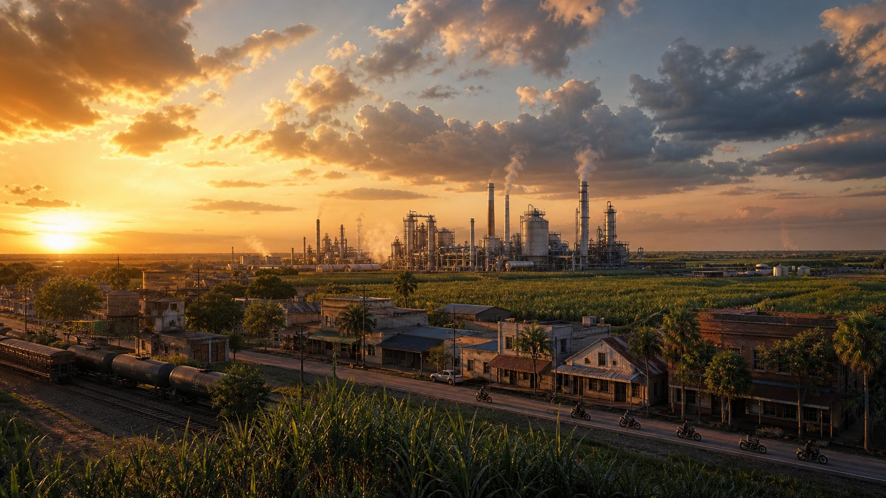

Raffinerie Allied Crystal
Le grand employeur local, associé à la production sucrière. La raffinerie est un repère visuel majeur dans les captures d'Ambrosia; aucun accès intérieur ni système économique de gestion n'est confirmé ici.

RÉGION OFFICIELLE · « KEEPING LEONIDA SWEET »
Au cœur industriel de Leonida, Allied Crystal fournit les emplois; un gang de motards local fournit « presque tout le reste ». C'est le portrait économique officiel d'une ville ouvrière qui n'a rien d'une carte postale.
Rockstar présente Ambrosia comme le cœur industriel de Leonida, là où l'industrie américaine et les valeurs de la vieille école règnent — « quel qu'en soit le coût ». Sa phrase la plus claire résume le rapport de force : la raffinerie Allied Crystal donne du travail, tandis que le gang de motards local fournit presque tout le reste. La description n'annonce pas le nom officiel de ce gang ni une mécanique de gestion d'usine.
Le grand employeur local, associé à la production sucrière. La raffinerie est un repère visuel majeur dans les captures d'Ambrosia; aucun accès intérieur ni système économique de gestion n'est confirmé ici.
Les images montrent des champs, des installations industrielles et une ville basse. Ce sont des indices de l'économie visuelle de la région; la liste complète des cultures, propriétés ou activités n'a pas été publiée.
Le texte officiel confirme sa présence et son influence dans la région, sans lui attribuer de nom dans ce descriptif. Des patchs ou appellations déchiffrées par la communauté sont à marquer « observé sur image », pas comme bio textuelle du studio.
Des comparaisons rapprochent Ambrosia de Clewiston et des zones sucrières près du lac Okeechobee. C'est une lecture de paysage et d'industrie; Rockstar n'a pas confirmé une ville réelle de référence unique.
Raffinerie, emplois et gang local sont explicitement dans la description Rockstar. Les captures officielles ajoutent des repères de rues, de champs et des motards; elles ne fixent ni frontières ni coordonnées exactes.
Ne transforme pas une lecture de patch ou une carte de fan en nomenclature officielle. Les images n'établissent pas que l'on peut entrer partout, travailler à la raffinerie, posséder des champs ou rejoindre le club.